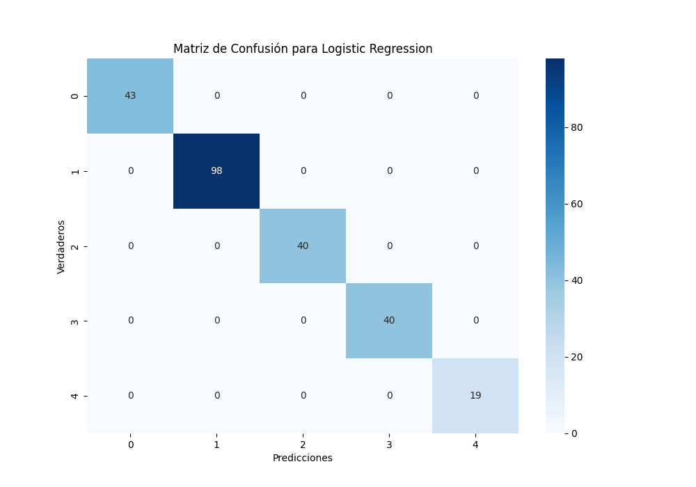

En esta sección, implementamos y evaluamos tres modelos de aprendizaje supervisado: Regresión Logística, Máquinas de Vectores de Soporte (SVM) y Árboles de Decisión. A continuación, presentamos una descripción general de cada método y los resultados obtenidos en el análisis del conjunto de datos de casos y genes.
La regresión logística es un método de clasificación que modela la probabilidad de pertenecer a una clase utilizando la función logística...
Resultados de Regresión Logística:
Precisión: 1.0
Sensibilidad: 1.0
Especificidad: 1.0
Puntuación F1: 1.0
Las Máquinas de Vectores de Soporte son un método de clasificación que encuentra el hiperplano óptimo que separa las clases...

Resultados de SVM:
Precisión: 1.0
Sensibilidad: 1.0
Especificidad: 1.0
Puntuación F1: 1.0
Los Árboles de Decisión son estructuras de árbol que dividen el conjunto de datos en subconjuntos más pequeños...
Resultados de Árboles de Decisión:
Precisión: 0.9798
Sensibilidad: 0.9792
Especificidad: 0.9792
Puntuación F1: 0.9792